Fragmented platforms
Readers jump between apps and websites, with catalogues limited to a single publisher and content that isn’t always official, with poor quality as a result.
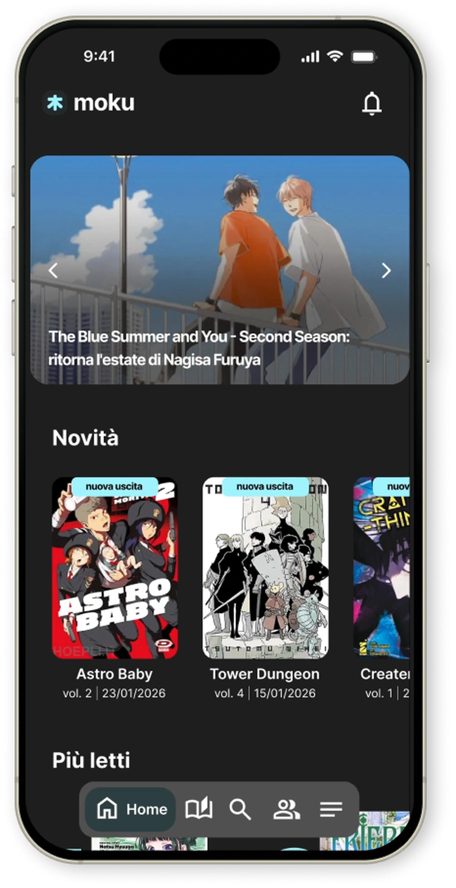
For those who love manga (and their own sanity). Moku is a mobile app that brings reading, cataloguing and community together in one place.
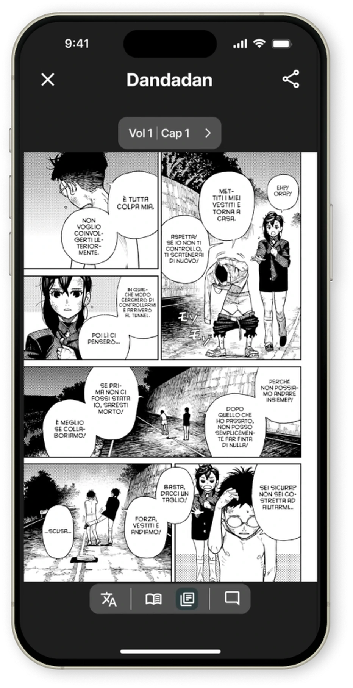
01 — The problem
Today it works more or less like this: you open a website and you’re hit by endless pop-ups, aggressive ads, pages that won’t load, poor image quality and interfaces stuck in the ’90s. To read two chapters you have to become a hacker, worse than Mr. Robot. And all you wanted was to read a manga.
Readers jump between apps and websites, with catalogues limited to a single publisher and content that isn’t always official, with poor quality as a result.
Aggressive ads, dated interfaces, unclear prices and “virtual coins”, and often machine translations of low quality.
Few tools to manage a personal library or keep track of where you stopped, weak offline support and no real space to share opinions.
02 — The idea & brand identity
From this collective frustration, Moku was born. Open the app, choose a manga, read. The whole idea is built on that simplicity, and so is the name.
Colour mood
Dark tones keep the manga pages in the spotlight; light cyan is the only accent.
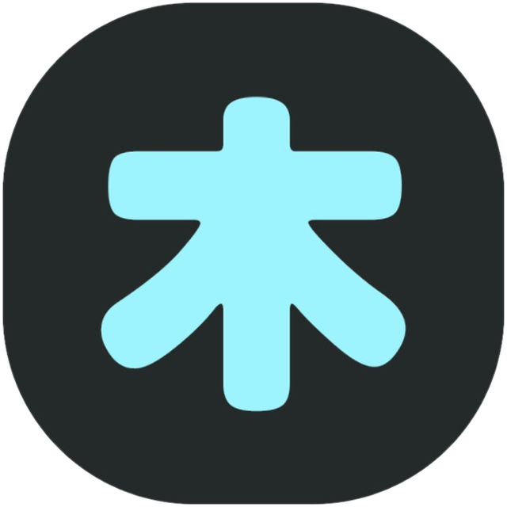
The symbol
The kanji 木 is also read moku and means “tree”: a calm, simple sign that becomes the app icon.
Where the name comes from
mokudoku suru, the Japanese expression for “reading in silence”: reading to yourself, without saying the words out loud.
03 — Research
survey responses
interviews
platforms benchmarked
Reddit threads observed
Who answeredmost common answers
Beyond features, readers asked for personalised suggestions and release alerts, a place to talk with other readers, translations in their own language, and ads only when they’re the price of free content. Page-by-page and continuous scrolling were loved almost equally, so both had to be supported.
16 platforms were mapped, both legal and unofficial. Many were discarded because they were websites only, not available as apps, or simple plugin-based readers. Seven were kept and analysed on 11 criteria (library management, visual quality, reading modes, reading preview, bookmarks, community, suggestions, ads, language, subscription and offline reading), each one for the part it does best. Below, each area of Moku with the platforms that inspired it.
Nine Reddit threads, four recurring needs. All of them, in the readers’ own words.
Readers spend a lot of time looking for their next read, and for a place that actually has it. They want suggestions based on real affinities.
“Is there a good site that loads almost all manga and manhwa? Any recommendation would be appreciated.”
“Does anyone know safe manga websites? I’m looking specifically for “Punks Triangle” and “How to Deal When Your Intimidating Neighbor Is Actually an Omega”, but I can’t find anything.”
“Where can I find Yu-Gi-Oh! manga in colour? There’s no official English translation past chapter 40, and the raw sites either don’t have it or only in black and white.”
“Does everyone read manga online or download them? And if you download them, what’s a decent site?”
Messy layouts, invasive ads and no truly clean, immersive reading mode.
“What’s the best app to read manga? I tried a couple but they didn’t really work: ads, or premium not unlocked.”
“I tried about ten different sources and they all do this with double pages. I just want one source where every page is single, except the real double spreads.”
“Any website or program to download manga that actually works? I’ve been at it for over 3 hours and nothing works: it says “downloading” and then just stops.”
Remembering which volume or chapter they stopped at, across many different sources.
“Is there a way to keep track of the manga you’re reading without creating an account on every single site?”
Sharing theories and opinions on new chapters, without spoilers and with constructive exchange.
“One of my favourite parts was the comment section talking nonsense about the chapter I’d just read. Where can I find a site with an active community?”
Two readers, one app. Interviews and survey answers came down to two recurring profiles: the one who reads every day and the one who reads now and then. Every design choice had to work for both.
25 years old
“The daily reader”
“On unofficial sites there’s no bookmark: I have to remember where I stopped, or write it down.”
29 years old
“The occasional explorer”
“While I read, I love the comments: everyone’s predictions for the next chapters.”
04 — Insights
Survey answers and interview notes were written on post-its and grouped by theme into eight insights.
Each one was then reframed as a “How might we” question, and the overlapping ones were merged: the result is five priorities that shaped the whole product.
An integrated system to catalogue everything in detail and keep track of releases and content, effortlessly.
“If I had a tool that really organises what I read and suggests manga in a smart way, I’d use it all the time.”
Ideal formats, page by page or scrolling, for comfortable reading without excessive zoom.
“Reading manga online is often more tiring than enjoyable. If the interface were better designed, I’d probably read much more.”
Previews, short plots and precise saving of the reading point reduce frustration and memory load.
“I read every day, and if an app makes me lose my place, I drop it straight away.”
Bonds between readers, thematic groups, and personalised suggestions delivered as notifications.
“A community would be really useful, like groups, to talk with people who have the same tastes.”
Minimal advertising, absent with a subscription, for a fluid experience with no distractions.
“If the app is well made and doesn’t interrupt the reading, it immediately becomes my go-to.”
05 — Concept & user flow
Moku was born by listening to people who read manga, with features designed around their real experience.
From the first opening to reading, through login, interests questionnaire, optional subscription, exploration, manga page, library and community. Scroll inside the frame to follow it.
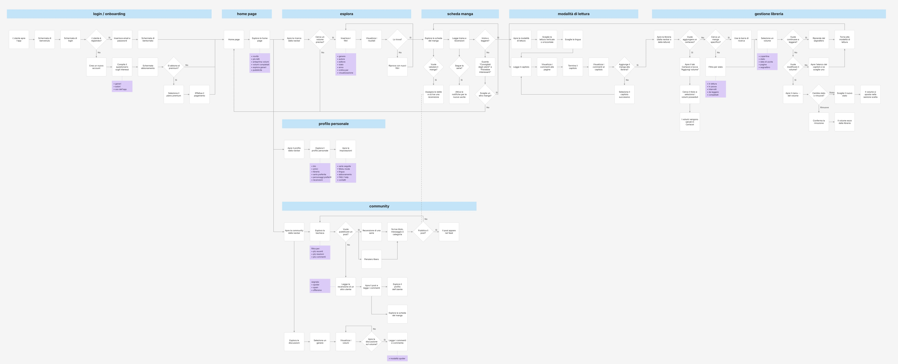
06 — The solution
New users create an account and pick their favourite genres and authors, so suggestions are relevant from day one. Then they choose: activate a subscription, or explore the titles with the free trial.
Genres, authors and how the app will be used.
Two monthly plans, no virtual coins and no ads for subscribers.
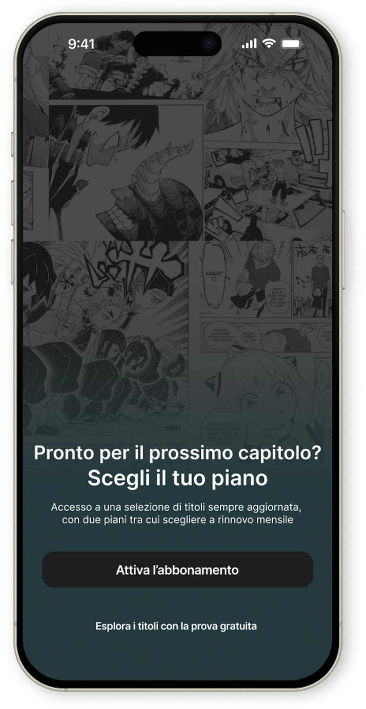
Designed to make discovering content easy and to guide readers towards their next read.
The latest volumes, with their release date.
A ranking of what everyone is reading right now.
Try a title before adding it to your library.
Everything you need to decide in a glance: genre, status, author, publisher, plot and the community rating.
Get notified when a new volume is out.
Start reading straight away or add it to your library.
Leave a score and a review for other readers.
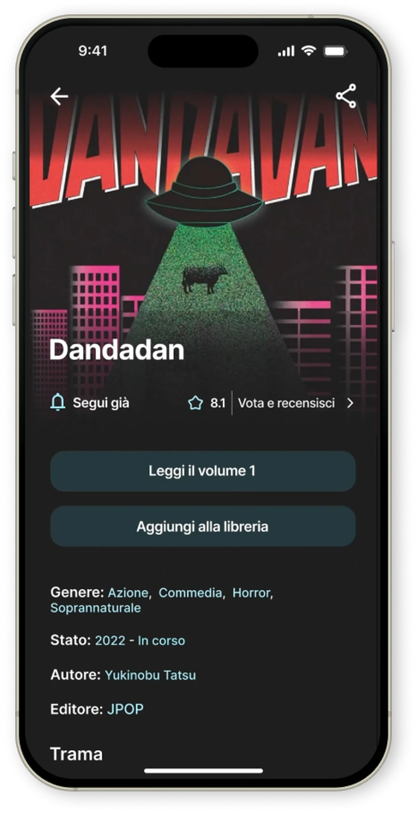
Simple and intuitive: manga are organised by reading status and format, digital or physical, making it easy to keep your reading under control.
Reading, on hold, dropped, completed.
Each volume shows exactly where you stopped.
Your paper collection lives next to the digital one.
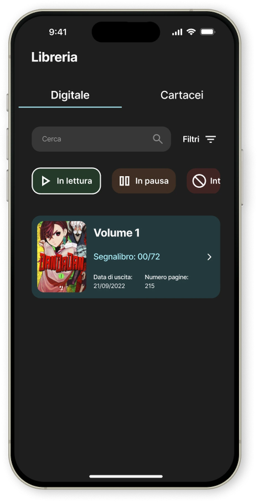
Customisable and immersive: vertical or horizontal reading, language switch and comments on each page, for a flexible digital experience.
Page by page or continuous scrolling.
Change translation without leaving the chapter.
React to a single page, not just the whole chapter.
Organised by posts and replies, with filters and thematic sections. Designed to discuss, share opinions and discover new titles in a structured, participatory way.
Reviews on one side, open conversations on the other.
Readers rate reviews, so the best ones rise to the top.
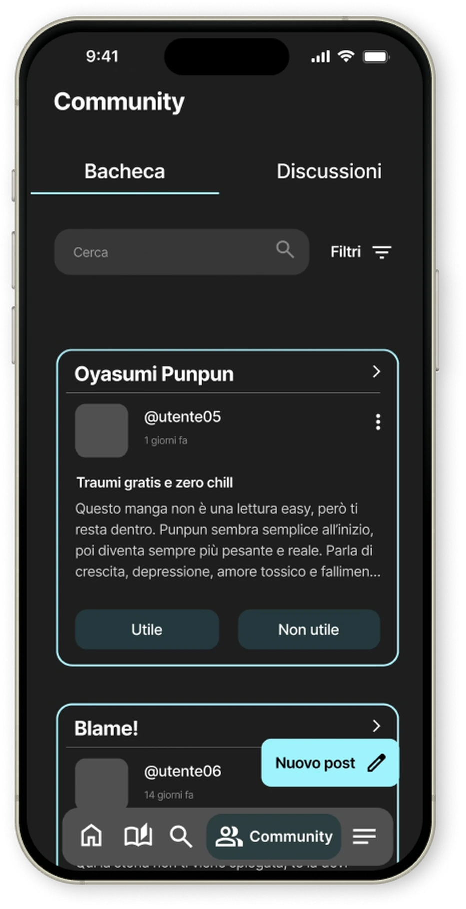
A profile that doesn’t just show who you are, but how you take part and what you love on the platform.
All the series you follow, in one place.
Personal reading preferences.
Your plan, always visible and easy to manage.
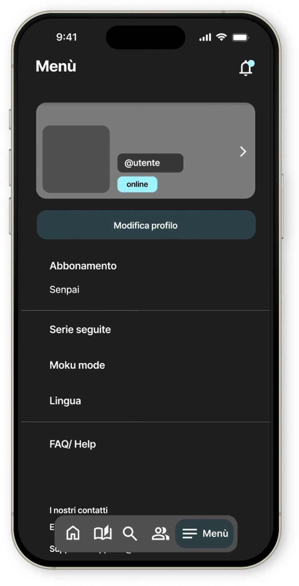
07 — Design system
A scalable design system with style guidelines and atomic components, designed for a dark interface that keeps the manga pages in the spotlight.
One typeface for the whole app: Bold for hierarchy, Regular for reading.
Typography
Heading 1Typography
Heading 2Typography
Heading 3Typography
Heading 4Typography
BodyButtons
Genre cards
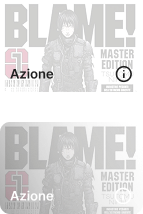
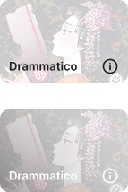
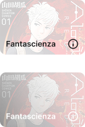
Report & feedback
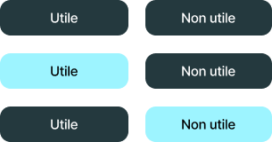
Dropdowns & accordions
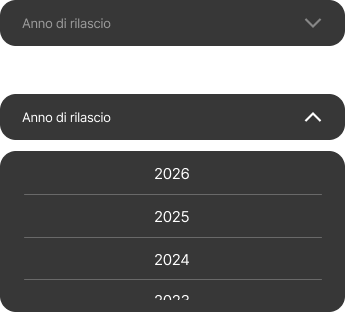
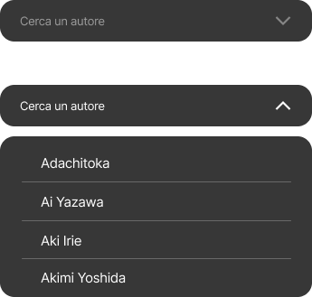
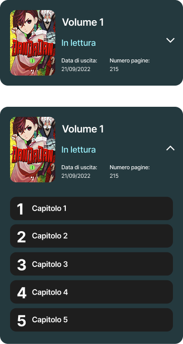
Chips, toggles & selectors
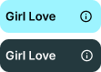
Navigation
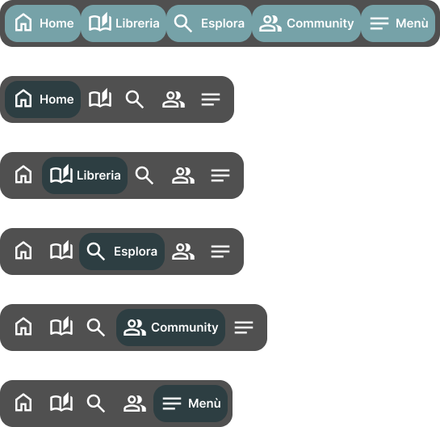
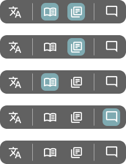
Library status
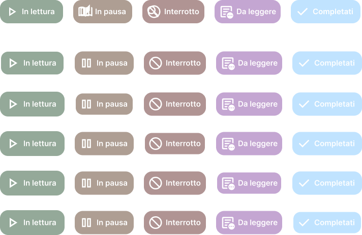
Review cards
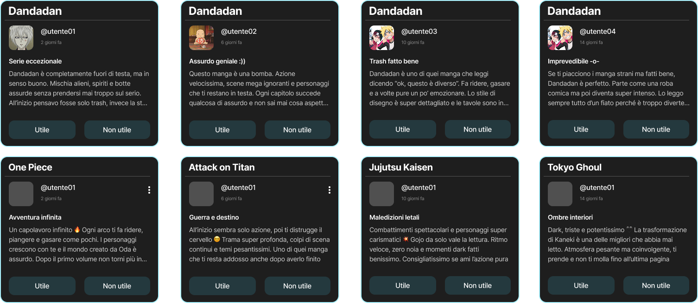
08 — Usability test
users
tasks
success rate
What emerged: the home page felt full of information, with nothing standing out more than the rest, and users found it hard to understand where the most active discussions happen in the community.
What comes next for Moku.
Link the app with comic shops and comic fairs, bringing the online experience together with events and physical stores.
Let users connect through a link or QR code of their account, to share on WhatsApp or other messaging apps.
Group manga by series instead of listing every volume separately. Inside each series: all variants, volumes and editions.
A “paper” effect and realistic shading in the double-page view.
Explore the interactive prototype, or dive into the design file to see components, styles and flows.